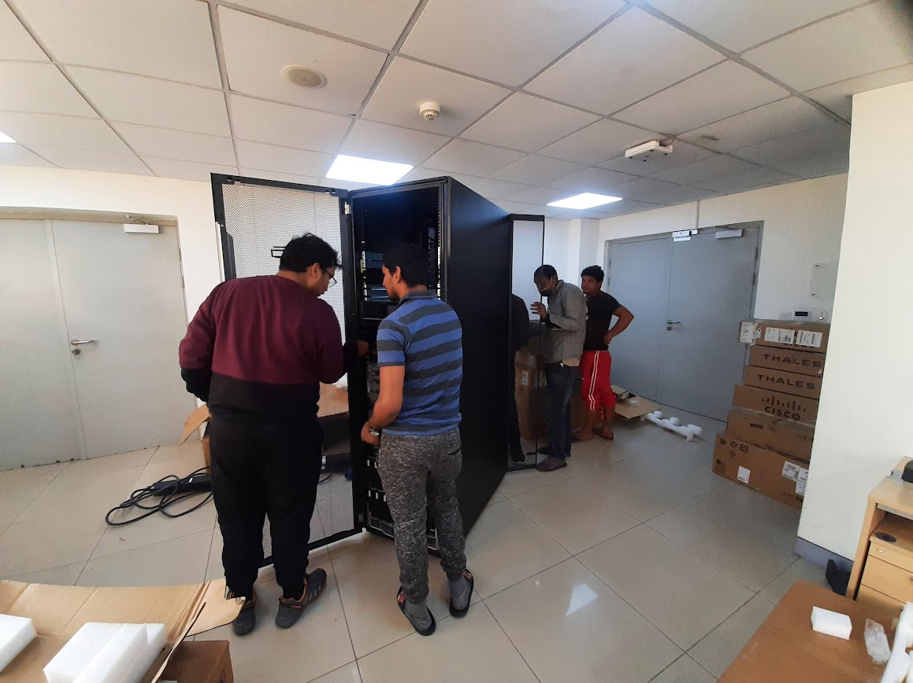
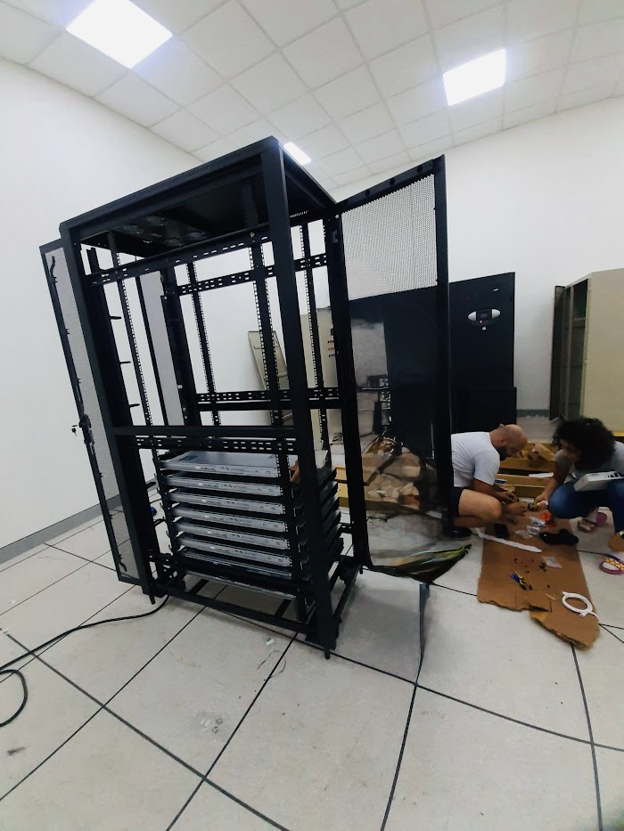

Article Overview
- Topic: Teamwork in Data Centers
- Author: Awash Maskey
- Focus: Operations, Reliability & Collaboration
- Environment: Enterprise & Government Data Centers
- Published: January 2025
Importance of Teamwork in a Data Center Environment
A data center is a mission-critical environment where system availability, security, and performance must be maintained at all times. Achieving these goals is not possible through individual effort alone. Effective teamwork is essential to ensure smooth operations, rapid incident response, and long-term infrastructure stability.
1. Ensuring High Availability and Uptime
Data centers operate 24/7, supporting business-critical services. Collaboration between system administrators, network engineers, security teams, and operations staff ensures that monitoring, maintenance, and issue resolution are handled efficiently, minimizing downtime and service disruption.
2. Faster Incident Response and Troubleshooting
Infrastructure issues often span multiple domains such as hardware, operating systems, networking, and applications. Teamwork enables cross-functional collaboration, allowing teams to diagnose problems faster and implement accurate solutions under pressure.
3. Strengthened Security and Compliance
Data centers handle sensitive and regulated data. Close coordination between security teams, system engineers, and management ensures consistent policy enforcement, secure configurations, and compliance with industry and government standards.
4. Knowledge Sharing and Skill Development
Teamwork promotes continuous learning and knowledge transfer. Experienced engineers mentor junior staff, while shared documentation and collaboration improve operational consistency and team resilience.
5. Effective Change and Disaster Recovery Management
Planned changes such as upgrades, migrations, and failover testing require coordination and communication. A collaborative team ensures proper planning, validation, and execution, reducing risks and improving disaster recovery readiness.
Conclusion
Teamwork is the backbone of successful data center operations. By fostering collaboration, communication, and shared responsibility, data center teams can maintain high availability, strong security, and operational excellence in even the most demanding environments.